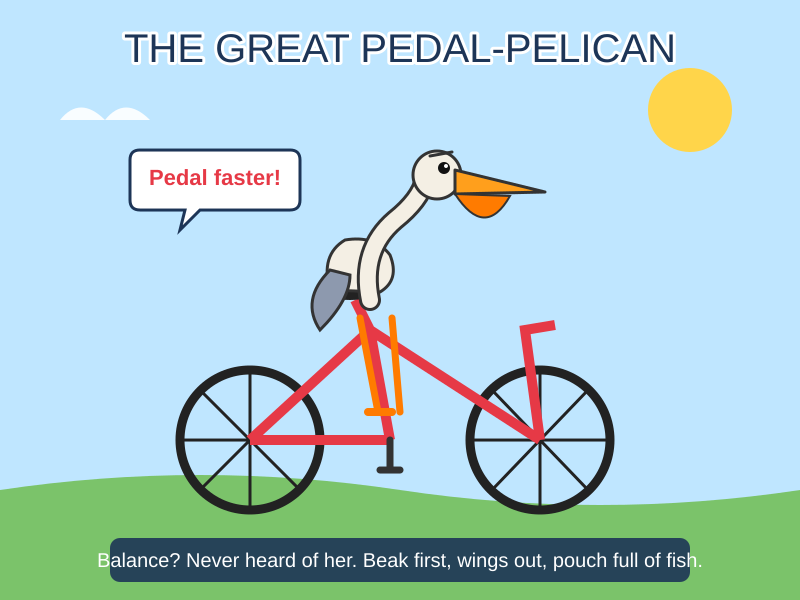
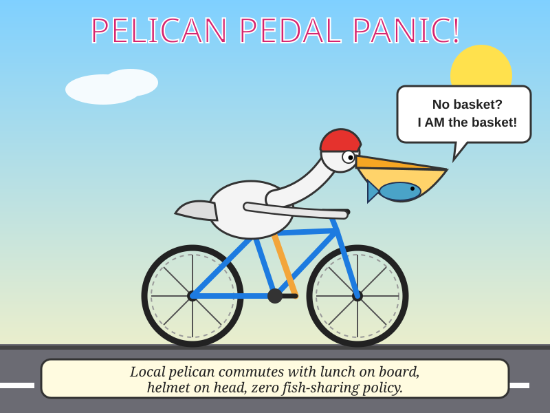
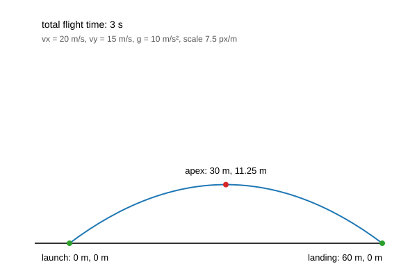
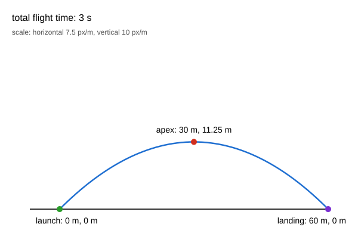
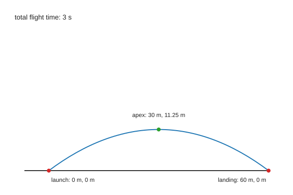
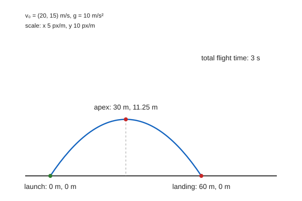

CODEX · gpt-6-astra 2026-10-25 06:00:01 SGT
2026-10-25 06:00:01 SGT
2026-10-25 06:00:01 SGTCLAUDE API · Fable 5.1
One Codex account, eight models in sequence, one attempt each. The SVGs are the probe; timestamps, latency, token drift and failures are the evidence.
Important work should not depend on a possibly degraded Codex. These SVGs are low-risk probes: capacity errors, latency, token use and failures make availability changes reproducible. In October 2026 this account began seeing unexplained capacity refusals and suspected silent degradation. The Raspberry Pi records each attempt, rebuilds this page and publishes both branches. A separate subjective quality series is planned; no quality score is shown until those reviews exist.
重要任务不应该依赖一个可能降智的 Codex。这些 SVG 是低风险探针：容量错误、耗时、token 用量和失败记录让可用性变化可以复现。2026 年 10 月，这个账号开始出现无法解释的容量拒绝和疑似能力下降。树莓派记录每次尝试、重建页面并发布两个分支。主观质量评审仍在计划中，评审完成前不展示质量分数。


Codex subscription vs Claude API · four models · benchmark rounds
Draw a satirical cartoon as ONE single self-contained SVG document (viewBox="0 0 800 600"). Theme: a pelican riding a bicycle. Make it funny and visually expressive, with a clear single scene, readable characters, and a bold title plus a short caption about the pelican on the bicycle. Make it an actual looping SVG animation using embedded SMIL or CSS animation: animate the bicycle wheels and a small pedaling or bobbing motion while keeping text readable. Output ONLY the SVG code: no markdown fences, no explanation, no text outside the document.
2026-10-25 06:00:01 SGT2026-10-25 06:01:12 SGT2026-10-25 06:02:07 SGT
2026-10-25 06:02:26 SGT
Create a single self-contained SVG (600x400 canvas, width="600" height="400", viewBox="0 0 600 400") showing a 2D projectile diagram: draw a horizontal ground line at y=350 spanning x=50 to x=550; a launch point at (100,350); the parabolic trajectory of a projectile launched from that point with initial horizontal speed 20 m/s and initial vertical speed 15 m/s under gravity g=10 m/s² (no air resistance), using a scale of 10 px per meter and y increasing downward; mark the apex and the landing point with small filled circles; and place text labels next to the launch point, apex, and landing point giving their horizontal distance and height in meters (e.g., "apex: 30 m, 11.25 m"), plus a label stating the total flight time in seconds. All labels must be readable (font-size ≥ 12), fully inside the canvas, and must not overlap each other or the drawn shapes. Output only the SVG code, with no explanation, markdown, or extra text.
 2026-10-25 06:03:17 SGT
2026-10-25 06:03:17 SGT
 2026-10-25 06:03:58 SGT
2026-10-25 06:03:58 SGT
 2026-10-25 06:04:32 SGT
2026-10-25 06:04:32 SGT
 2026-10-25 06:04:37 SGT
2026-10-25 06:04:37 SGT
Y = successful attempts · X = round
raw records, searchable and paginated
| Time (SGT) | Round | Model | Status | Duration | Input | Cached | Output | Reasoning | Total | Error | SVG |
|---|